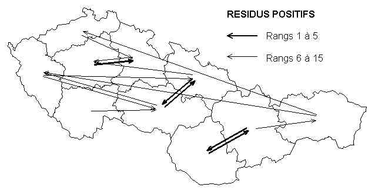
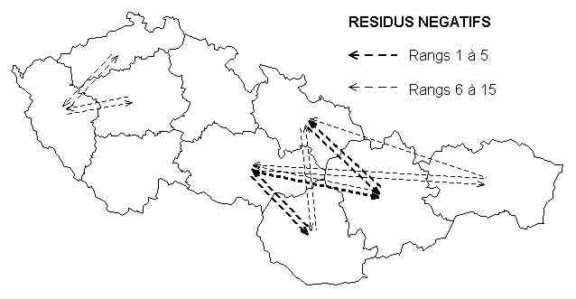
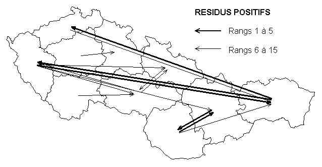
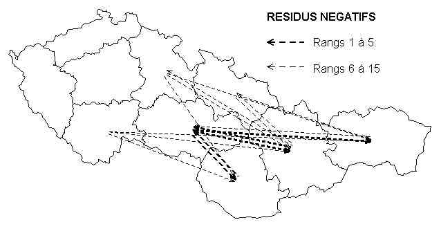
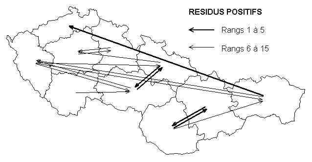
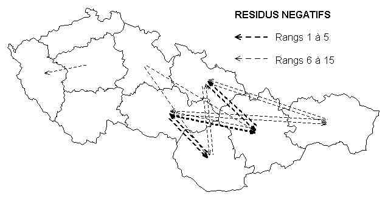

4.2 INTERPRETATION DES RESIDUS DES MODELES D'INTERACTION SPATIALE
L'analyse des résidus d'un modèle d'interaction spatiale
est généralement très riche d'enseignement à
condition d'être menée correctement. Elle peut en particulier
conduire à mettre en évidence une mauvaise spécification
des hypothèses des modèles d'interaction spatiale et amener
à en proposer des versions enrichies. On examinera successivement
dans ce chapitre :
(1) Les critères
de définition des résidus
(2) Les coefficients
d'attraction et de mobilité résiduelle
(3) Les
enseignements tirés de la cartographie des résidus
(4) Les coefficients
de barrière
(5) Les coefficients
d'interaction territoriale.
4.2.1 Critères de définition des résidus
Les résidus des modèles d'interaction spatiale relèvent certes tout d'abord d'une interprétation proprement statistique visant à déterminer si le modèle retenu n'est pas biaisé par des phénomènes d'autocorrélation ou d'hétéroscédasticité. En fonction de la forme du modèle retenu et de son type d'ajustement, il sera opportun de vérifier à l'aide de méthodes appropriés si de tels phénomènes se produient et si des solutions proprement statistiques permettent d'y remédier.Mais à supposer que de tels problèmes soit résolu, il reste encore à examiner si la distribution spatiale (et non pas statistique) des résidus n'est pas en mesure de révéler l'existence de variables explicatives latentes dont la manifestation serait une autocorrélation spatiale des résidus. Si tel est le cas, on aura la preuve manifeste que la mesure de proximité spatiale retenue n'épuise pas l'ensemble des phénomènes d'interaction pouvant être imputé à la localisation géographique et il faudra alors modifier ou compléter le modèle.
La cartographie et plus généralement l'analyse spatiale de la distribution des résidus constitue donc une étape indispensable dans toute démarche d'élaboration d'un modèle d'interaction spatiale et il est surprenant que si peu d'études en fassent cas. En nous limitant à l'analyse d'un exemple précis, celui des migrations entre les 10 régions de Tchécoslovaquie au cours de la période 1961-65, nous allons montrer combien cette démarche peut se révéler riche d'enseignements.
Tableau 8 : Echanges migratoires entre les régions tchécoslovaques
au cours de la période 1961-65effectifs en milliers, origine en ligne et destination en colonne.
F63 BC BS BO BN BE MS MN SO SC SE tot BC 0.0 7.9 15.1 22.6 13.2 7.1 7.5 3.3 2.2 1.5 80.4 BS 11.6 0.0 8.2 3.9 2.9 5.8 3.2 1.7 0.7 0.6 38.6 BO 18.3 6.0 0.0 11.1 3.7 6.0 6.7 3.4 2.0 2.2 59.4 BN 30.0 3.7 13.4 0.0 10.1 5.1 6.3 3.6 2.1 2.4 76.7 BE 19.1 3.0 5.6 10.8 0.0 9.6 9.9 2.3 1.2 1.2 62.7 MS 11.5 6.0 8.9 6.2 7.8 0.0 35.6 6.1 2.4 1.5 86.0 MN 8.9 2.0 4.6 4.9 5.6 22.0 0.0 6.2 5.0 3.4 62.6 SO 5.0 2.1 4.6 4.6 3.4 6.5 11.5 0.0 20.4 6.3 64.4 SC 3.2 1.3 2.9 2.9 1.7 3.5 12.0 23.9 0.0 9.5 60.9 SE 3.1 1.0 4.2 5.8 2.2 2.2 8.1 7.5 7.5 0.0 41.6 tot 110.7 33.0 67.5 72.8 50.6 67.8 100.8 58.0 43.5 28.6 633.3
Détermination de la matrice des flux estimés
Une fois déterminé la forme d'un modèle d'interaction spatiale (Cf. 4.1) et fixés les paramètres à estimer en fonction des contraintes et du critère d'ajustement retenu, il est possible de calculer pour chaque couple origine-destination une matrice des flux estimés (notée F*) dont les valeurs pourront être comparées à celles de la matrice des flux observés (notée F).
Dans l'exemple des migrations en Tchécoslovaquie au cours de la période 1961-1965 nous avons choisi d'analyser les résultats de deux modèles qui mobilisent la même information (somme des origines, somme des destinations, distance moyenne entre les habitants), utilisent le même critère d'ajustement (minimisation du chi-2 des différences entre flux observés et estimés) mais imposent des contraintes de conservation des flux qui sont différentes (modèle sans contrainte et modèle à double contrainte).
Tableau 9 : Flux migratoires entre les régions tchécoslovaques (1961-65)
estimés à l'aide d'un modèle sans contraintesF*ij= k. Oi . Dj . dij -0.93 (r2 = 69.4%)
F*ij BC BS BO BN BE MS MN SO SC SE tot BC - 8.1 17.8 21.5 12.0 9.5 10.2 5.3 3.4 1.6 89.5 BS 13.1 - 7.2 5.3 4.1 5.2 4.7 3.0 1.7 0.8 45.0 BO 21.6 5.4 - 11.4 5.0 5.2 5.8 3.3 2.1 1.0 60.8 BN 31.2 4.8 13.6 - 9.1 7.0 8.6 4.2 2.9 1.4 82.8 BE 20.5 4.3 7.1 10.7 - 10.3 11.8 4.9 3.4 1.5 74.5 MS 16.6 5.6 7.5 8.4 10.5 - 21.5 12.7 7.0 2.5 92.3 MN 8.7 2.5 4.1 5.1 5.9 10.5 - 6.7 7.2 2.4 53.1 SO 8.1 2.9 4.2 4.4 4.4 11.1 12.0 - 6.5 2.2 55.9 SC 6.5 2.0 3.3 3.8 3.8 7.7 16.2 8.2 - 3.3 55.0 SE 3.2 1.0 1.7 1.9 1.7 2.9 5.7 2.9 3.5 - 24.4 tot 129.5 36.6 66.4 72.6 56.6 69.4 96.5 51.3 37.6 16.7 633.3 Tableau 10 : Flux migratoires entre les régions tchécoslovaques (1961-65)
estimés à l'aide d'un modèle à double contrainteF*ij= ai .Oi .bj. Dj . dij -1.34 (r2 = 82.9%)
F*ij BC BS BO BN BE MS MN SO SC SE tot BC - 7.2 19.0 23.1 10.1 6.6 6.9 3.8 2.1 1.7 80.4 BS 10.8 - 7.7 4.7 3.2 4.2 3.5 2.6 1.2 0.9 38.6 BO 21.6 5.8 - 13.5 4.2 4.1 4.5 2.9 1.5 1.3 59.4 BN 30.2 4.0 15.6 - 8.1 5.1 6.6 3.3 2.0 1.7 76.7 BE 16.2 3.4 6.0 10.0 - 8.7 10.1 4.1 2.4 1.8 62.7 MS 11.3 4.7 6.2 6.8 9.3 - 22.5 15.0 6.5 3.6 86.0 MN 6.9 2.3 3.9 5.0 6.3 13.1 - 9.3 10.6 5.3 62.6 SO 6.2 2.8 4.1 4.1 4.1 14.2 15.1 - 9.2 4.7 64.4 SC 4.1 1.5 2.6 3.0 3.0 7.4 20.7 11.1 - 7.6 60.9 SE 3.5 1.3 2.4 2.7 2.3 4.4 11.0 6.0 8.0 - 41.6 tot 110.7 33.0 67.5 72.8 50.6 67.8 100.8 58.0 43.5 28.6 633.3
Détermination de la matrice des flux résiduels bruts (R1)
La première définition que l'on peut proposer des résidus (R1) est la différence entre le flux observé et le flux estimé, c'est-à-dire la soustraction terme à terme des éléments de la matrices de flux observés et de celle des flux estimés, calcul étendu aux sommes marginales de ces matrices. Appliqué au cas des migrations entre les 10 régions de Tchécoslovaquie au cours de la période 1961-65, on aboutit aux résultats suivants :
Tableau 11 : Résidus migratoires bruts (R1) entre les régions tchécoslovaques (1961-65)
estimés à l'aide d'un modèle sans contraintesR1ij = Fij - F*ij
R1ij BC BS BO BN BE MS MN SO SC SE tot BC - -0.2 -2.7 1.1 1.2 -2.4 -2.7 -2.0 -1.2 -0.1 -9.1 BS -1.5 - 1.0 -1.4 -1.2 0.6 -1.5 -1.3 -1.0 -0.2 -6.4 BO -3.3 0.6 - -0.3 -1.3 0.8 0.9 0.1 -0.1 1.2 -1.4 BN -1.2 -1.1 -0.2 - 1.0 -1.9 -2.3 -0.6 -0.8 1.0 -6.1 BE -1.4 -1.3 -1.5 0.1 - -0.7 -1.9 -2.6 -2.2 -0.3 -11.8 MS -5.1 0.4 1.4 -2.2 -2.7 - 14.1 -6.6 -4.6 -1.0 -6.3 MN 0.2 -0.5 0.5 -0.2 -0.3 11.5 - -0.5 -2.2 1.0 9.5 SO -3.1 -0.8 0.4 0.2 -1.0 -4.6 -0.5 - 13.9 4.1 8.5 SC -3.3 -0.7 -0.4 -0.9 -2.1 -4.2 -4.2 15.7 - 6.2 5.9 SE -0.1 0.0 2.5 3.9 0.5 -0.7 2.5 4.6 4.0 - 17.2 tot -18.8 -3.6 1.1 0.2 -6.0 -1.6 4.3 6.7 5.9 11.9 0.0 Tableau 12 : Résidus migratoires bruts (R1) entre les régions tchécoslovaques (1961-65)
estimés à l'aide d'un modèle à double contrainteR1ij = Fij - F*ij
R1ij BC BS BO BN BE MS MN SO SC SE tot BC - 0.7 -3.9 -0.5 3.1 0.5 0.6 -0.5 0.1 -0.2 0.0 BS 0.8 - 0.5 -0.8 -0.3 1.6 -0.3 -0.9 -0.5 -0.3 0.0 BO -3.3 0.2 - -2.4 -0.5 1.9 2.2 0.5 0.5 0.9 0.0 BN -0.2 -0.3 -2.2 - 2.0 0.0 -0.3 0.3 0.1 0.7 0.0 BE 2.9 -0.4 -0.4 0.8 - 0.9 -0.2 -1.8 -1.2 -0.6 0.0 MS 0.2 1.3 2.7 -0.6 -1.5 - 13.1 -8.9 -4.1 -2.1 0.0 MN 2.0 -0.3 0.7 -0.1 -0.7 8.9 - -3.1 -5.6 -1.9 0.0 SO -1.2 -0.7 0.5 0.5 -0.7 -7.7 -3.6 - 11.2 1.6 0.0 SC -0.9 -0.2 0.3 -0.1 -1.3 -3.9 -8.7 12.8 - 1.9 0.0 SE -0.4 -0.3 1.8 3.1 -0.1 -2.2 -2.9 1.5 -0.5 - 0.0 tot 0.0 0.0 0.0 0.0 0.0 0.0 0.0 0.0 0.0 0.0 0.0 La comparaison des matrices de résidus bruts obtenus à l'aide de deux modèles utilisant la même information mais partant d'hypothèses de contrainte différentes se révèle riche d'enseignement.
Détermination de la matrice des flux résiduels relatifs (R2)
- Les résidus du modèle sans contrainte apparaissent globalement plus élevés en valeur absolue que ceux du modèle à double contrainte, ce qui ne fait que refléter les différences de qualité d'ajustement des deux modèles (respectivement 69% et 83%)
- Le signe des résidus est généralement le même dans chacun des deux modèles, mais des exceptions notables apparaissent. Ainsi, le flux migratoire dirigé de Bohême Sud vers Bohême-Centre apparaît sur-estimé par le modèle sans contrainte (résidu négatif de 1500 migrants) alors qu'il est sous-estimé par le modèle à double contrainte (résidu positif de 800 migrants). L'interprétation des résultats sera donc différentes puisque dans le premier cas on considérera que le flux migratoire observé est plus faible que prévu (ce qui peut s'interpréter comme un effet barrière) alors que dans le secont on considérera qu'il est plus fort que prévu (ce qui peut s'interpréter comme un effet de préférence ou d'intégration).
- Les sommes marginales de la matrice des résidus bruts sont nulles dans le cas du modèle à double contrainte (par définition) alors qu'elles peuvent être positives ou négatives dans le cas d'un modèle sans contrainte. La somme totale des résidus est toutefois nulle dans les deux cas puisque le modèle dit "sans-contrainte" impose en fait la conservation du total général des flux. Le modèle sans contrainte autorise un certain nombre d'interprétations des sommes marginales (en terme d'attractivité ou de mobilité résiduelle) qui sont par définition absentes de l'analyse des résidus d'un modèle à double contrainte.
Si l'on s'en tient à la première définition qui a été proposée des résidus, on risque de privilégier dans l'analyse des résultats les écarts affectant les flux migratoires les plus important, c'est-à-dire ceux qui concernent la relation entre les régions les plus peuplées et/ou les relations entre les régions les plus proches. Mais on pourrait également considérer qu'une différence entre flux observé et flux estimé n'a pas le même sens selon le volume du flux observé ou estimé auquel elle s'applique.
Ainsi, dans le cas du modèle à double contrainte, on constate que la région de Bohême-Centre a, selon les hypothèses retenues, un déficit de migration de 500 migrants vers la Bohême Nord et de 200 migrants vers la Slovaquie Orientale. Mais le volume théorique des flux estimés est de 23100 migrants vers la première région contre seulement 1700 vers la seconde. Le déficit relatif de migration apparaît donc négligeable dans le premier cas (-2%) et beaucoup plus conséquent dans le second (-11%) ce qui n'était pas du tout reflété par la simple prise en considération des résidus bruts.
L'interprétation des résidus d'un même modèle (ici, le modèle à double contrainte) sera donc sensiblement différente selon que l'on s'intéresse aux différences absolues ou aux différences relatives entre flux observés et flux estimés.
Tableau 13 : Résidus migratoires relatifs (R2) entre les régions tchécoslovaques (1961-65)
estimés à l'aide d'un modèle à double contrainteR2ij = (Fij - F*ij)/ F*ij
R2ij BC BS BO BN BE MS MN SO SC SE tot BC - 10% -21% -2% 31% 8% 9% -14% 6% -11% 0% BS 7% - 6% -16% -9% 40% -7% -34% -40% -34% 0% BO -15% 3% - -18% -13% 47% 50% 19% 32% 68% 0% BN -1% -8% -14% - 24% -1% -4% 8% 6% 40% 0% BE 18% -12% -7% 8% - 10% -2% -43% -51% -34% 0% MS 2% 27% 44% -8% -16% - 58% -59% -63% -59% 0% MN 29% -13% 17% -2% -10% 68% - -33% -53% -36% 0% SO -19% -24% 13% 12% -17% -54% -24% - 122% 35% 0% SC -21% -15% 11% -2% -43% -53% -42% 116% - 25% 0% SE -11% -20% 76% 114% -6% -50% -26% 25% -7% - 0% tot 0% 0% 0% 0% 0% 0% 0% 0% 0% 0% 0%
Suivant la problématique adoptée, on pourra préférer effectuer l'analyse des résidus sur les écarts relatifs ou les écarts absolus entre flux observés et flux estimés, chacun apportant des renseignements utiles et complémentaires. Dans une perspective statistique, il existe toutefois une troisième possibilité qui est plus satisfaisante que les deux précédentes sur le plan théorique puisqu'elle se fonde explicitement sur la prise en compte de la significativité des résidus.
Détermination de la matrice des flux résiduels les plus significatifs (R3)
En effet, à partir du moment où l'on a opté pour un critère d'ajustement la solution la plus logique consiste à calculer les résidus en fonction de ce critère d'ajustement et ainsi à examiner quelles sont les couples de régions dont les flux présentent le plus faible degré d'adéquation avec le modèle et constituent la part du phénomène qui demeure inexpliquée. Cette démarche est d'autant plus satisfaisante que le critère d'ajustement (déviance, chi-2, moindres carrés) est généralement associé à des tests de significativités qui permettent de déterminer les flux pour lesquels les résidus positifs ou négatifs sont significativement différent de zéro pour un seuil donné (1%; 5%).
Dans l'exemple retenu, le critère d'ajustement étant la minimisation du chi-2 des écarts entre flux observés et flux estimés, la manière la plus cohérente de calculer les résidus consiste à mesurer le chi-2 de leur différence (quantité positive à laquelle on peut associer un test à un degré de liberté) et à lui adjoindre le signe de la différence (pour faciliter l'interprétation des écarts).
Tableau 14 : Résidus migratoires Chi-2 (R3) entre les régions tchécoslovaques (1961-65)
estimés à l'aide d'un modèle à double contrainteR3ij = signe (Fij - F*i) . [ (Fij - F*ij)2/ F*ij]
R3ij BC BS BO BN BE MS MN SO SC SE tot BC - 9 -28 -3 31 6 7 -8 3 -4 0 BS 8 - 6 -11 -5 26 -4 -17 -14 -10 0 BO -22 2 - -21 -8 30 33 10 13 25 0 BN -1 -5 -18 - 22 -1 -3 5 3 17 0 BE 23 -7 -5 8 - 9 -2 -28 -25 -14 0 MS 2 18 35 -7 -16 - 87 -73 -51 -35 0 MN 24 -6 11 -2 -8 78 - -32 -54 -26 0 SO -15 -13 8 7 -11 -65 -29 - 117 24 0 SC -13 -6 6 -1 -23 -46 -61 122 - 22 0 SE -7 -7 37 59 -3 -33 -28 20 -6 - 0 tot 0 0 0 0 0 0 0 0 0 0 0 On remarquera que, indépendamment de leurs propriétés statistiques, les résidus mesurées à l'aide du critère du chi-2 définissent une situation intermédiaire entre les résidus bruts et les résidus relatifs puisque les différences sont relativisées par la racine carrée du flux estimé. Si l'on reprend d'exemple de la comparaison des flux dirigés de la Bohême Centre vers la Bohême Nord et la Slovaquie Orientale, on constate que leurs résidus calculés selon le critère du chi-2 sont assez voisins (respectivement -3.2 et -4.4) alors que le premier semblait nettement plus fort que le second pour le critère des différences absolues et nettement plus faible pour celui des différences relatives.
Les trois mesures de résidu proposées s'inscrivent en fait dans un continuum de mesures d'écarts relatifs accordant un rôle plus ou moins important aux grands flux et aux petits flux selon la valeur d'un paramètre a variant entre 0 et l'infini :
Raij = (Fij-F*ij)/(F*ij)a
Conclusion sur le choix des critères de définition des résidus
Les trois solutions proposées pour mesurer les résidus d'un modèle d'interaction spatiale possèdent toutes des justifications théoriques ou empiriques de sorte que c'est en définitive la problématique de recherche et les objectifs de transmission des résultats qui doivent servir de guide au choix de l'une ou l'autre des mesures possibles.
Les critères statistiques tels que le chi-2 ou la déviance semblent les plus pertinents et opèrent un compromis intéressant entre les mesures de dispersion absolue et relative. Mais ils peuvent s'avérer difficile à transmettre à un public peu au fait de ces méthodes, de sorte que le chercheur aura souvent intérêt à utiliser les critères statistiques dans la construction de sa propre interprétation des résultats mais à utiliser des indicateurs plus simples lorsqu'il construit des documents de synthèse tels que des cartes ou des tableaux des résidus les plus importants.
4.2.2 Mesures d'attractivité et de mobilité résiduelle (modèles sans contrainte)
Comme nous l'avons signalé précédemment, les modèles sans contraintes présentent l'intérêt de produire des matrices de résidus bruts où les sommes marginales ne sont pas nécessairement égales à zéro. On peut donc non seulement analyser les écarts au modèle au niveau des couples de lieux (flux) mais aussi produire des indices synthétiques décrivant les écarts au niveau des lieux émetteurs ou recepteurs. Quatre indices peuvent être produits, ayant trait respectivement à l'émissivité, la receptivité, l'attractivité et la mobilité résiduelle (les deux derniers indices n'étant calculables que dans le cas des matrices carrées).Indices d'émissivité résiduelle et de receptivité résiduelle
La comparaison de la somme observée des flux émis par chaque région tchécoslovaque (Oi) diffère sensiblement de la somme estimée des flux émis (O*i) dans le cas du modèle sans contrainte. L'écart entre ces deux sommes, qui correspond à la somme en ligne du tableau des résidus bruts du modèle sans contrainte (Tableau 11) définit donc un excédent ou un déficit des migrations originaires de chaque région.
On constate par exemple que la région de Bohême-Centre n'a envoyé que 80400 émigrants vers les autres régions tchécoslovaques, alors que le modèle sans contrainte prévoyait un total de 89500 émigrants. Il existe donc un déficit brut (Oi-O*i) de 9100 émigrants que l'on peut exprimer de façon relative sous la forme d'un indice d'émissivité IOi = (Oi-O*i)/O*i dont la valeur est ici de -11%. Le même calcul effectué sur la région de Slovaquie Orientale aboutirait à un indice d'émissivité de +41% qui indique que le nombre d'émigrants de cette région est beaucoup plus élevé que ce que prévoyait le modèle sans contrainte.
On peut évidemment définir de la même manière un indice de réceptivité comparant la somme observée des flux reçus par chaque région (Dj) et la somme estimée correspondante (D*j). L'indice de réceptivité sera alors défini par IDj= (Dj-D*j)/D*j . Appliqué aux deux régions précédentes, on constate que sa valeur est de -17% pour la Bohême-Centre et de +42% pour la Slovaquie orientale.
La valeur de ces deux indices dépend toutefois étroitement du choix des masses qui sont introduites dans le modèle gravitaire sans contrainte et, les valeurs obtenues seraient évidemment différentes si l'on avait utilisé les populations totales et non pas les populations migrantes comme facteurs d'émission et de réception. Si tel était le cas, on utilisereait plutôt un rapport entre les sommes marginales des résidus et la population totale comme indices d'émission et de réception. D'une manière générale, si l'on note E le facteur d'émission et R le facteur de réception retenu dans le modèle, ces indices s'écrivent :
IOi = (Oi-O*i)/Ei : indice d'émissivité résiduelle
IDj= (Dj-D*j)/Rj : indice de réceptivité résiduelle
Indices de mobilité résiduelle et d'attractivité résiduelle
Dans le cas particulier ou les origines et les destinations sont confondues, on peut déduire deux indices supplémentaires mesurant respectivement la mobilité et l'attractivité résiduelle de chaque régions. Dans leur formulation la plus simple, ces indices s'écrivent :
IMi = ( IOi + IDi )/2 : indice de mobilité résiduelle
IAi = ( IDi - IOi ) : indice d'attractivité résiduelle
L'indice de mobilité résiduelle mesure si le turnover migratoire d'une région (émigration et immigration confondues) est supérieur ou inférieur à ce que prévoit le modèle. Il permet donc de mesurer le degré d'ouverture ou de fermeture d'une région en prenant comme référence le modèle d'interaction spatiale sans contrainte.
L'indice d'attractivité résiduelle mesure quant à lui l'existence d'une dissymétrie dans le turnover précédent en examinant si les excédents ou déficits de mobilité sont identiques dans les deux dirrections. Une région ayant un indice d'attractivité résiduel positif pourra être considéré comme plus attractive que ce que prévoyait le modèle tandis qu'une région ayant un indice d'attractivité résiduel négatif pourra être considérée comme plus répulsive que ce que prévoyait le modèle.
La combinaison des deux indices permet de définit une typologie des régions combinant leurs degrés d'ouverture ou de fermeture et leur caractère attractif ou répulsif. Appliqué au cas des migrations entre régions Tchécoslovaques en 1961-65 on aboutit aux résultats suivants :
Tableau 15 : Indices d'attractivité et de mobilité résiduelle des régions tchécoslovaques
(Migrations 1961-65 estimées à l'aide d'un modèle gravitaire sans contrainte)
i Oi Di O*i D*i IOi IDi IMi IAi BC 89.5 129.5 -10% -15% -12% -4% BS 45.0 36.6 -14% -10% -12% 4% BO 60.8 66.44 -2% 2% 0% 4% BN 82.8 72.6 -7% 0% -4% 8% BE 74.5 56.63 -16% -11% -13% 5% MS 92.3 69.39 -7% -2% -5% 5% MN 53.1 96.49 18% 4% 11% -13% SO 55.9 51.33 15% 13% 14% -2% SC 55.0 37.56 11% 16% 13% 5% SE 24.4 16.73 71% 71% 71% 0% Les résultats montrent que la mobilité résiduelle la plus forte s'observe en Slovaquie et plus précisément en Slovaquie occidentale où les mouvements migratoires observés sont supérieurs de 71% à ceux prévus par le modèle gravitaire. La mobilité résiduelle est en revanche négative dans toutes les régions des pays tchèques, à l'exception de la Moravie-Nord et de la Bohême-Ouest.
L'attractivité résiduelle est d'interprétation plus délicate puisque l'on observe que des régions ayant enregistré des gains migratoires considérables telles que la Bohême Centre (+20 300) ou la Moravie-Nord (+38 800) ont cependant des niveaux d'attractivité résiduels qui sont négatifs (respectivement -4% et -13%). Ces résultats ne sont paradoxal qu'en apparence, le modèle montrant en fait que, compte tenu de leur localisation centrale à l'intérieur de la Tchécoslovaquie, ces deux régions auraient pu bénéficier de gains encore plus importants.Inversement, la Bohême Nord affiche le plus fort niveau d'attractivité résiduelle (+8%) alors que son solde migratoire est légèrement négatif (-3900). Il n'existe en fait pas de relation entre le solde migratoire et le niveau d'attractivité résiduel, comme le montre la comparaison des trois régions slovaques qui ont toutes des soldes migratoires négatifs mais qui ont des attractivités résiduelles positive (Slovaquie Centre), négative (Slovaquie Ouest) ou nulle (Slovaquie Est).
4.2.3 Cartographie des résidus et mise en évidence d'effets de barrière et d'intégration territoriale
Dans le cas des modèles à double contrainte, les effets d'attractivité et de mobilité résiduelle sont totalement absorbés par les paramètres de contrainte de conservation des flux émis ou reçus, ce qui signifie que les résidus du modèle s'entendent toutes choses égales quant aux facteurs d'accroissement ou de réduction globale des échanges d'un lieu par rapport aux autres.Les modèles de ce type sont donc révélateurs de relations spécifiques entre certains lieux ou certains ensembles de lieux à l'intérieur du territoire considéré et ces relations spécifiques témoignent soit de phénomènes d'intégration (ensemble de lieux ayant des résidus positifs les uns avec les autres) soit de phénomènes de barrières (entre deux ensembles de lieux ayant des résidus négatifs les uns avec les autres).
Si l'on suppose que ces phénomènes de barrière et d'intégration sont de nature territoriale et définissent des ensembles de lieux contigus séparés par des limites précise, alors la cartographie constitue un outil privilégié pour repérer leur localisation. Reste évidemment à choisir le critère le plus pertinent pour définir les résidus qui seront cartographiés (Cf. 4.2.1).
En raison du caractère fréquemment dissymétrique à gauche de la distribution des résidus (résidus négatifs plus nombreux que les résidus positifs, mais de valeur généralement plus faible), il est recommandé d'utiliser un critère ordinal fondé sur les quantiles de la distribution des résidus. On choisira par exemple de représenter les 5% ou les 10% des résidus les plus extrêmes, même si cela conduit à prendre des seuils différents pour les résidus positifs et les résidus négatifs. Dans l'exemple tchécoslovaque nous avons choisi de cartographier 33% des résidus en retenant les 15 résidus ayant les valeurs négatives les plus fortes et les 15 résidus ayant les valeurs positives les plus fortes.
L'intérêt de cette méthode est de faciliter la comparaison des cartes de résidus lorsqu'elles sont fondées sur des critères différents (R1, R2, R3) et de voir ainsi les points communs et les différences qui apparaissent selon que l'on utilise le critère des différences absolues, des différences relatives ou des différences les plus significatives :
Résidus positifs les plus forts Résidus négatifs les plus forts R1 

R2 

R3 

La comparaison des différentes cartes de résidus obtenues à l'aide du modèle à double contrainte révèle une assez bonne concordance des résidus négatifs les plus forts mais des divergences assez nettes dans celles des résidus positifs les plus forts.
Les cartes de résidus négatifs signalent toutes l'existence d'une barrière migratoire très nette de part et d'autre de la limite des républiques tchèques et slovaques. Toutes les régions situées de part et d'autre de cette limite ainsi que celles qui en sont peu distantes échangent moins de migrants que prévu avec les régions de l'autre république. Ce phénomène touche particulièrement les deux régions de Moravie d'une part et les régions de Slovaquie Centrale et de Slovaquie Ouest d'autre part.
Les cartes de résidus positifs font toutes apparaître une bonne intégration territoriale de la république tchèque et de la Slovaquie (les régions d'une même république ont fréquemment des échanges plus forts que prévus), mais la carte des résidus relatif souligne également l'existence de résidus positifs très important dirigés de l'est de la Slovaquie vers les périphéries nord et ouest de la Bohême, phénomène qui est beaucoup moins bien souligné par la carte des résidus absolus. Ce phénomène de relations privilégiées entre la partie la moins développée de la Slovaquie et les bassins miniers et sidérurgiques de Bohême est à mettre en rapport avec l'expulsion des Allemands après la seconde guerre mondiale et les mouvements de population consécutifs que cette expulsion a entraîné à l'intérieur de la Tchécoslovaquie. Les transferts de population jeune de Slovaquie vers les Sudètes se sont maintenus durant plusieurs décennies en raison de la pression démographique des zones rurales de l'est de la Slovaquie (facteur push) et du déficit chronique de main d'oeuvre des régions périphériques de Bohême où les conditions de vie étaient défavorables à une installation durable des migrants (pollution, pathologies sociales).
Qualitativement important, ce mouvement de relation migratoire privilégié entre les extrémités occidentale et orientale du pays met en jeu des effectifs de population moins important que les migrations à courte distance et le choix d'un critère de définition des résidus fondé sur les échanges absolus ou sur les échanges relatifs peut soit en majorer, soit en minorer l'importance, ce qui ne peut manquer d'influer sur les commentaires. Avec le critère des différences absolus, on sera tenter d'insister sur l'intégration migratoire des deux républiques et sur la présence d'un effet de barrière entre celles-ci ; avec le critère des différences relatives on adoptera une position plus nuancée en montrant que l'effet de barrière migratoire inter-république existe à courte distance mais disparaît et même s'inverse à longue distance.
4.2.4 Evaluation déductive de l'effet d'une partition à l'aide d'un coefficient unique (barrière)
Si l'on opte pour l'hypothèse de l'existence d'une barrière migratoire réduisant sensiblement les échanges de migrants entre les deux composantes historiques de la Tchécoslovaquie ou pour l'hypothèse inverse mais complémentaire d' une intégration c'est-à-dire une concentration des échanges à l'intérieur des limites de la république tchèque et de la Slovaquie, on peut chercher à en quantifier les effets à l'aide d'indices synthétiques déduit de l'étude des résidus du modèle d'interaction spatiale retenu.Dans le cas d'un modèle à double contrainte (conservation des flux émis ou reçus par chaque région) un coefficient unique sera suffisant pour résumer l'effet d'une partition territoriale en deux puisque tout accroissement des flux à l'intérieur d'une république se traduira mécaniquement par un accroissement équivalent entre les régions de l'autre république et par une réduction des échanges entre les deux. Un coefficient unique suffira donc à mesurer l'accroissement relatif des flux intra-républiques par rapport aux flux inter-républiques que l'on peut imputer à la présence d'une barrière migratoire.
La solution la plus simple pour obtenir cet indice consiste à calculer le volume des flux intra-républiques et inter-républiques observés et estimés, notés respectivement (Fintra, Finter, F*intra, F*inter) puis à en déduire les coefficients d'accroissement relatif des flux intra et inter républiques, et enfin de calculer le coefficient d'accroissement relatif des flux intra-république par rapport aux flux inter-république qui est une mesure d'intégration ou le rapport inverse qui est une mesure de barrière puisqu'elle évalue la perméabilité de la limite des deux républiques.
Appliqué au cas de la matrice des échanges migratoires entre les régions Tchécoslovaques au cours de la période 1961-65 et de leur estimation à l'aide d'un modèle à double contrainte, on obtient les étapes de calcul suivantes :
partition retenue T : Bohême-nord (1) Choix de la partition à tester Bohême-ouest Bohême-centre Bohême-est Bohême-sud Moravie-nord Moravie-sud S : Slovaquie-ouest Slovaquie-centre Slovaquie-est somme des flux observés (2) calcul de la somme des flux F T S Tot observés en fonction de T l'appartenance croisée S Tot somme des flux estimés F* T S Tot (3) calcul de la somme des flux T estimés en fonction de S l'appartenance coisée Tot (modèle à double contrainte) Coefficient d'appartenance croisée F/F* T S Tot T (4) calcul du rapport entre la S somme des flux observés et des Tot flux estimés pour chaque type d'appartenance croisée coefficients d'appartenance commune F F* F/F* (5) Calcul de la somme des flux intra-maille Aij=0 et des flux inter-maille. Aij=1 Tot Coefficient de perméabilité
0.72 / 1.13 = 0.63(6)Détermination des paramètres de Coefficient d'intégration
1.13 / 0.72 = 1.57barrière et de perméabilité Dans l'exemple étudié on aboutit à une mesure synthétique de l'effet de barrière correspondant à un coefficient d'intégration de 1.57 qui indique que l'intensité relative des flux intra-république est supérieure de 57% à celle des flux intra-républiques, toutes choses égales par ailleurs. Ou bien (ce qui revient au même) on peut dire que la perméabilité de la limite des deux républiques n'est que de 63% ce qui implique une réduction relative de 37% des plus inter-républiques par rapport aux flux intra-républiques.
Les effets de barrière, c'est-à-dire les réductions des flux induits par le franchissement d'une limite ne peuvent généralement pas être mesurés dans l'absolu car ils sont le plus souvent étroitement associés à des phénomènes d'intégration territoriale, c'est-à-dire de concentration des échanges à l'intérieur des limites des mailles territoriales. A moins d'avoir une connaissance précise du processus qui a bouti à la configuration actuelle des échanges, il est le plus souvent impossible de déterminer si les effets d'appartenance territoriale que l'on mesure sont le résultat de processus exogènes de réduction des flux (barrière) ou de procesus endogènes de concentration des flux à l'intérieur des mailles territoriales (intégration).

Dans l'exemple présenté sur la figure ci-dessus, on considère une situation théorique d'équilibre initial entre 4 unités développant chacune 2 liaisons symétriques d'échange avec leurs voisins les plus proches. S'il existe une barrière réduisant de moitié les flux qui la traverse, on aboutit à une première situation ou la valeur du coefficient de barrière est 2. S'il n'existe pas de barrière mais un simple effet d'intégration (accroissement de 50% des flux internes à chaque maille, on aboutit à un coefficient de barrière de 1.5. Enfin, si les deux effets agissent de façon concommitente, leurs effets se cumulent et l'on aboutit à un coefficient de barrière de 3. Mais dans les trois situations considérées, on ne peut décomposer le coefficient de barrière en ses deux composantes (intégration & barrière) que si l'on est en mesure de modéliser non seulement l'interaction spatiale mais aussi la mobilité générale de chaque zone (c'est-à-dire le nombre "normal" de flux émis ou reçus par chaque zone). Or, ceci implique des hypothèses beaucoup plus complexes que celles des modèles habituels d'interaction spatiale puisqu'il faut expliquer non seulement la mobilité mais aussi la non-mobilité !


{kind=link}
{kind=link}
{kind=link}
{kind=link}
{kind=link}